Centered on the theme of "Chasing Light Traces," this collection uses six compositional techniques to capture a journey from nature to urban life, showcasing how light and shadow intertwine between tranquility and vitality.
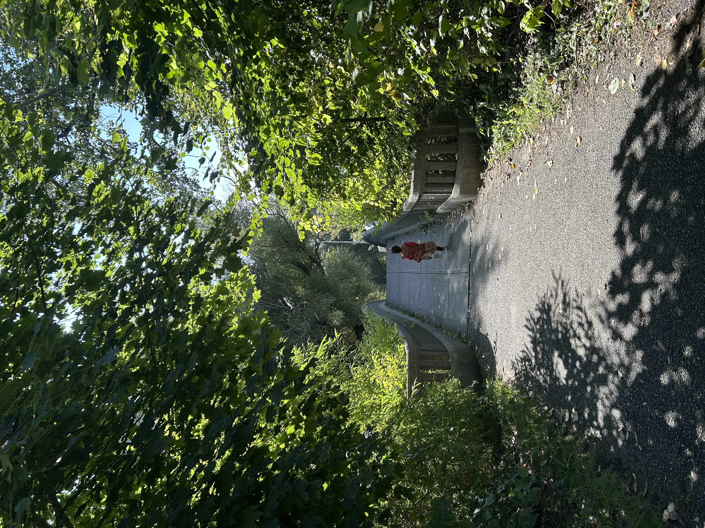
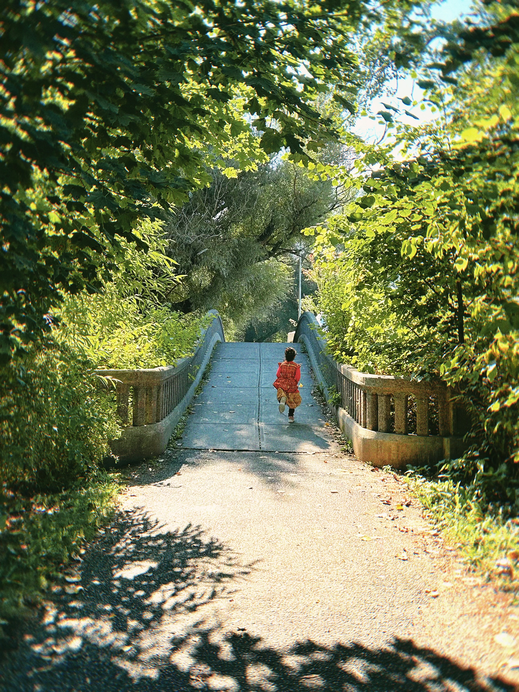
In this image, the stone bridge's railings and the straight pathway form a double set of leading lines, drawing the viewer's eye firmly to the running figure of the little girl. Meanwhile, the dense canopy on both sides converges in the middle, creating a deep, "time-tunnel" effect. For the edits, I slightly increased the warm tones and contrast to make the vibrant green leaves and the girl's bright red clothes stand out as visual focal points. This enhances the fairy-tale feeling of "walking towards the light and the unknown" and fits the theme of a "poetic stroll" perfectly.
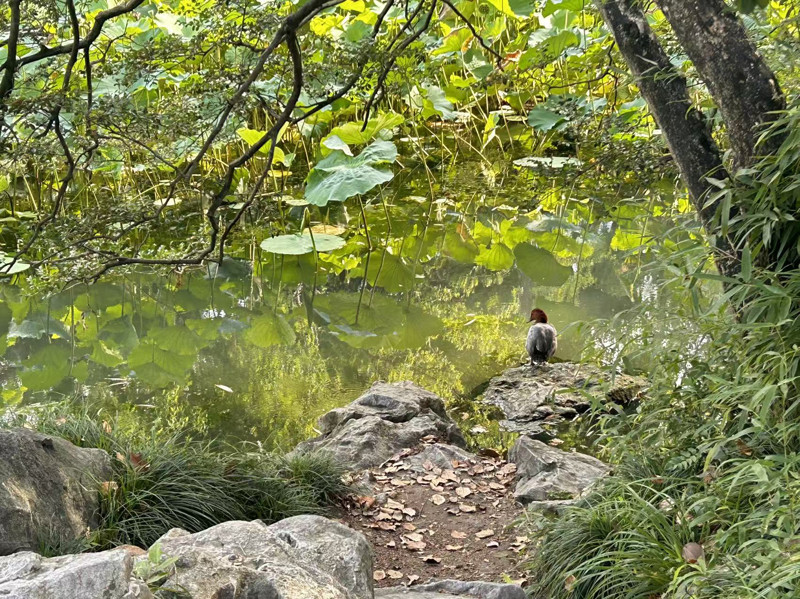
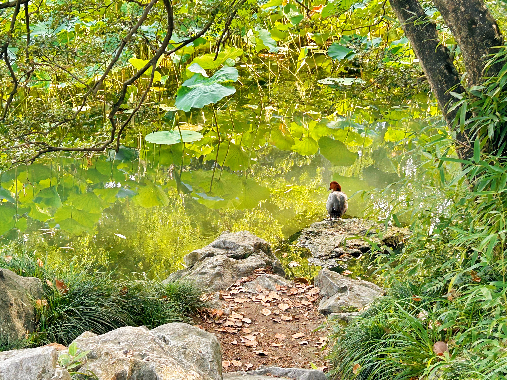
I used the bamboo leaves extending from the right and the branches on the left as a natural foreground frame, precisely directing the viewer's attention to the solitary duck resting on the rock in the middle of the water. This framing technique adds depth to the image, as if we are quietly observing from behind the bushes. For the edits, I boosted the green luminance of the lotus leaves and slightly darkened the surrounding rocks. This makes the duck's orange head pop against the green, creating a tranquil atmosphere of "a secluded path leading to a peaceful creature."
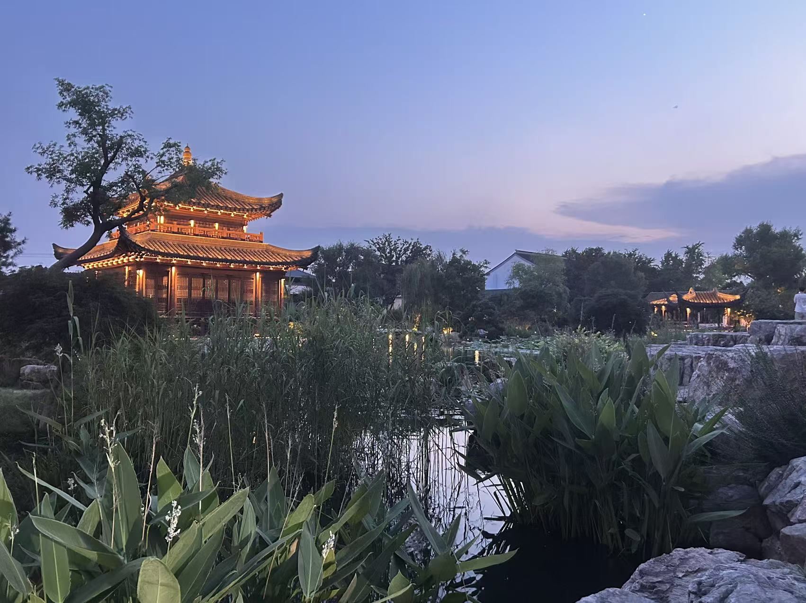
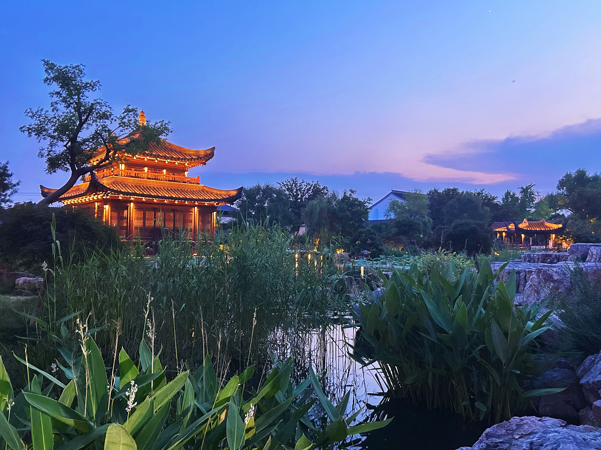
I placed the brightly lit pavilion on the left third of the frame, leaving the right two-thirds for the blue-purple twilight sky and the water. This composition creates a visual balance of weight, guiding the eye from the luminous architecture to the distant, serene sky. For the edits, I enhanced the contrast between warm and cool tones (the warm yellow lights against the cool blue sky) and lifted the shadow details. This gives the garden a mysterious and romantic classical charm, perfectly aligning with the "Wandering in a Garden Dream" theme.
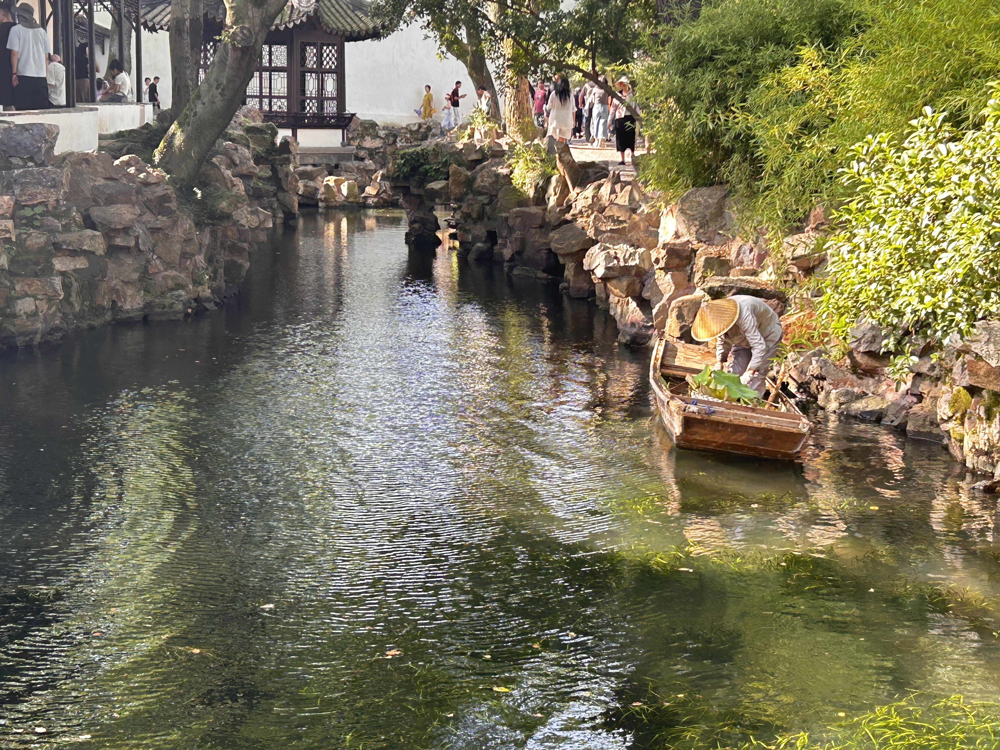
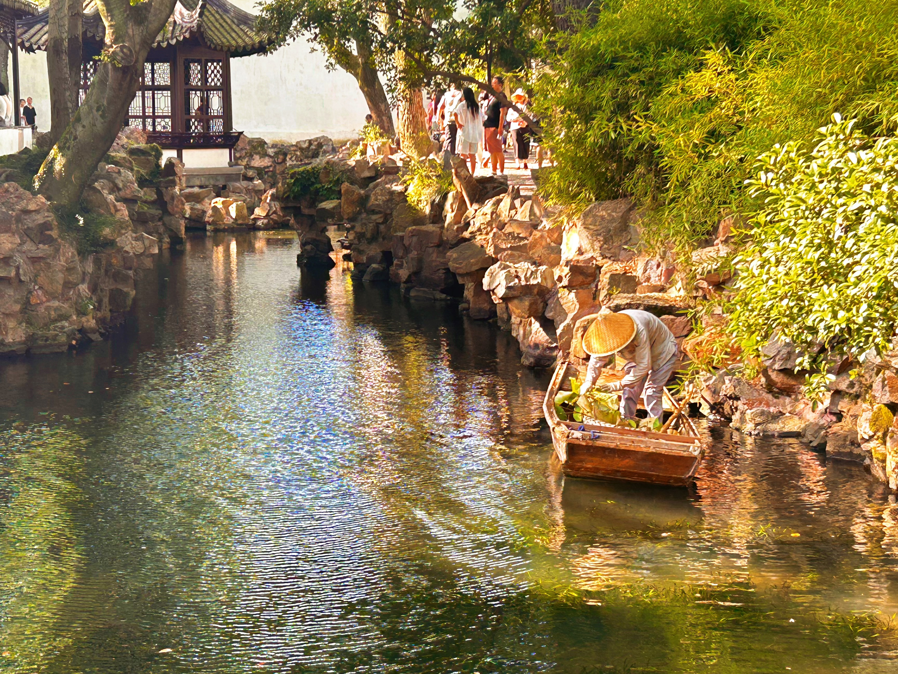
In this photo, the gardener wearing a straw hat on the right contrasts sharply with the calm water on the left, creating a dynamic "movement vs. stillness" effect. Additionally, the humble nature of the labor contrasts strongly with the exquisite rockeries and the shimmering, picturesque water. For the edits, I enhanced the highlights on the water ripples to give them an oil-painting-like texture, and slightly increased the brightness of the worker's clothing to make them stand out against the darker background, emphasizing the vitality of "humanity and nature blending together."
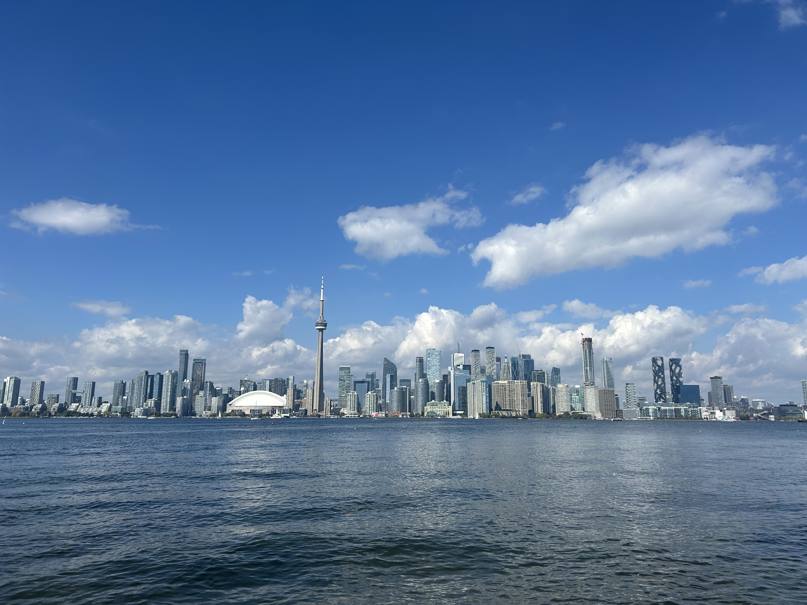
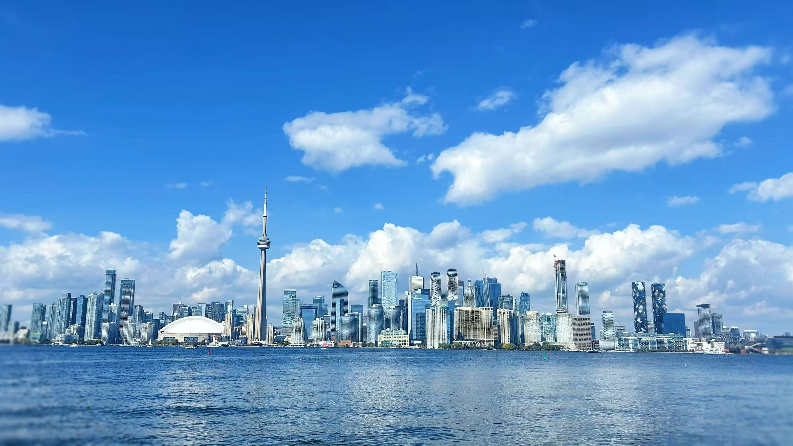
I positioned the CN Tower and the city skyline in the lower third of the frame, dedicating the upper two-thirds to the azure sky and white clouds. This composition naturally places the visual focus at the intersection of the tower's peak and the clouds, guiding the viewer's gaze upward from the water to the vast sky. For the edits, I slightly boosted the blue saturation of the sky and the contrast of the clouds to make the image more transparent and airy. This reinforces the feeling of the "city breathing" and represents the urban, humanistic chapter of the "stroll."
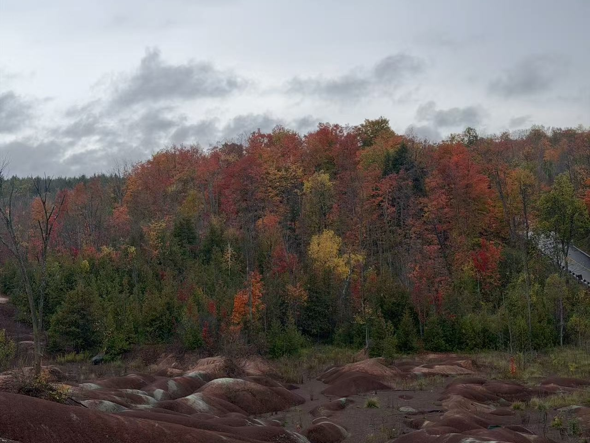
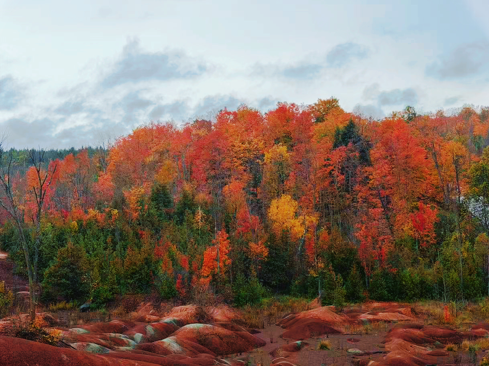
This photograph is entirely driven by color. The fiery red maples contrast intensely with the deep green pines, while the smooth red rocks in the foreground create a textural contrast with the dense forest behind. For the edits, I increased the red saturation and slightly lowered the green luminance. This makes the red-green contrast more striking and highlights the gorgeousness of autumn, symbolizing the spectacular seasonal changes encountered during a "stroll."
My strongest photograph is "Running Towards the Light." The original image felt slightly flat, but editing improved it significantly. By boosting the warm tones and increasing contrast, I made the girl's red clothing pop against the green canopy, transforming a simple park path into a magical "time tunnel." These purposeful edits perfectly support my theme of chasing light. If I were to complete this assignment again, I would focus on taking more time to plan my shots rather than relying purely on casual, spontaneous captures. While spontaneous moments have charm, slowing down would allow me to find cleaner backgrounds and avoid elements that distract from the main subject. I would also experiment more with my camera's exposure settings to prevent highlight clipping in bright areas before editing. Overall, this project taught me how light and purposeful editing can turn everyday moments into visual poetry.